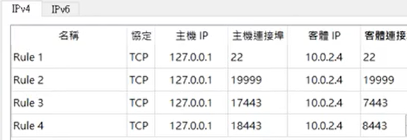

40723229 <<
Previous Next >> group2
40723206
Ubnutu對外連線-IPV4
1.選擇主機網路NAT Network，新增埠號如下圖所示:

2.登入密碼一樣是kmol2020
3.打開LXTermial輸入ifconfig>sudo apt install net-tools輸入密碼也是kmol2020
4.輸入ping6 127.0.0.1測試是否可執行
5.進入cd2020pj1資料夾然後git pull
6.輸入sudo vi wsgi.py並且按下i編輯內容將’host=127.0.0.1’編輯設置為10.0.2.4
7.按下esc並且輸入:wq來存取，開啟cd2020pj1.leo
8.用nav尋找allowExt檔案位置並且新增ttt檔案
9.在tmp下輸入sudo vi oauth_scrum.txt再輸入python3 wsgi.py開啟遠端
10.進入https://127.0.0.1:18443/alogin測試是否可以上傳ttt檔案
※ sudo為使用特殊的權限執行的程式。vi為編輯內容
※ ifconfig為網卡信息的各項說
*更新問題:
1.因為老師有將cd2020pj1更新，所以我們從虛擬主機下開啟python3 wsgi.py之模組有缺少問題
解決: pip3 install pydrive安裝此模組
2.mako系統版本沒有更新，導致遠端連線出現問題
解決: 輸入”sudo pip3 install mako==1.1.3”更新版本1.1.3
Ubnutu對外連線-IPV6 (須在學校操作)
1.選擇主機網路NAT Network設定IPV6
2.打開LXTermial並且輸入cd /etc
3.按照路徑進入cd apt > cd apt.conf.d > sudo vi proxy.conf
5.密碼kmol2020並且一樣按i鍵進入編輯模式
6.輸入Acquire::http::proxy "http://[2001:288:6004:17::53]:3128";
7.按esc並且使用:wq來儲存，再用sudo apt update apt更新apt
8.ifconfig>sudo apt install net-tools，cd etc/netplan
9.輸入sudo vi 00-installer-config.yaml並且按照以下方式更改縮排
|
|
network:
ethernets:
enp0s3:
dhcp4: true
dhcp6: true
nameservers:
addresses:
- 2001:b000:168::1
|
10.輸入ping6 2001:288:6004:17::254測試是否可以連線
11.新增4個埠號
12.輸入ifconfig 來查詢在IPV6的ip
13.進入cd2020pj1資料夾執行git config --global --add http.proxy[2001:288:6004:17::53]:3128
13.輸入sudo vi wsgi.py wsgi.py將近端的host更改成::，再輸入python3 wsgi.py
15.用平常開啟近端的方式https://[::1]:18443/alogin
16.打開leo新增ttt檔案的上傳設定測試是否可以上傳
40723229 <<
Previous Next >> group2